Experiment page
General Layout of the Page
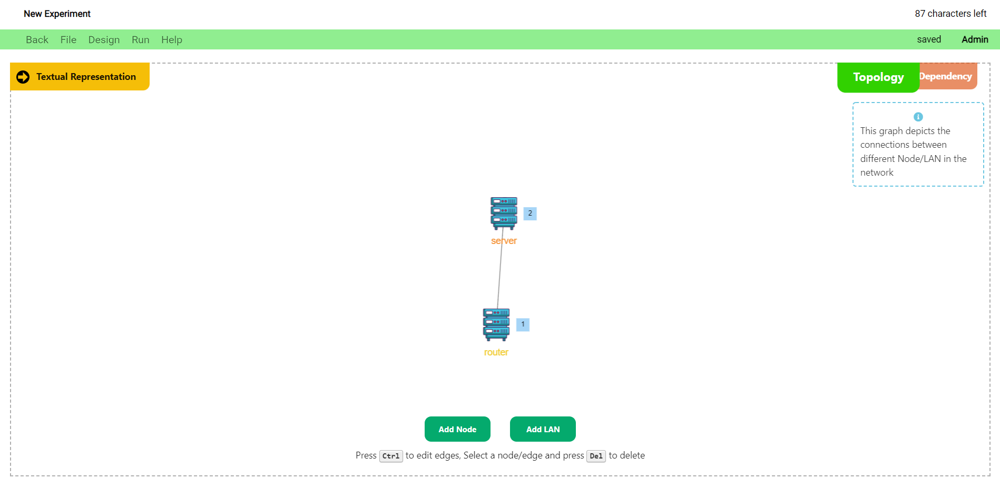
The experiment page is divided into 2 sections:
- Experiment Definition Section
- Visual Representation Section
The Experiment Definition Section is comprised of 3 sub-sections:
- Scenario
- Constraint
- Bindings
The Scenario section is used to define the actions and triggers of the experiment.
The Constraint section is used to define the topology structure of the experiment.
The Bindings section is used to bind the actions defined in the scenario to actual computer commands.
The Visual Representation Section depicts two kinds of graphs:
- The Network Topology
- The Dependency Graph
The Network Topology is used to depict the nodes of the nodes, and the connections that exist between them.
The Dependency Graph is used to depict the actions of the experiment, and the dependencies that exist between these actions.
A few general views of the page and its various components are shown below.
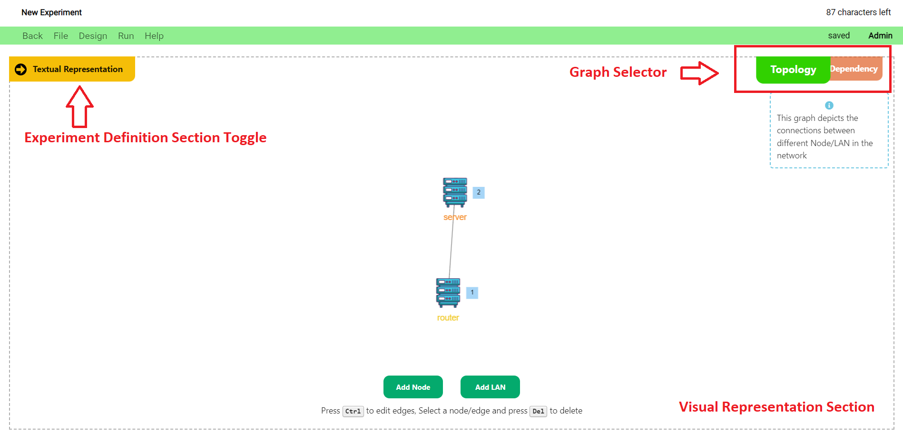
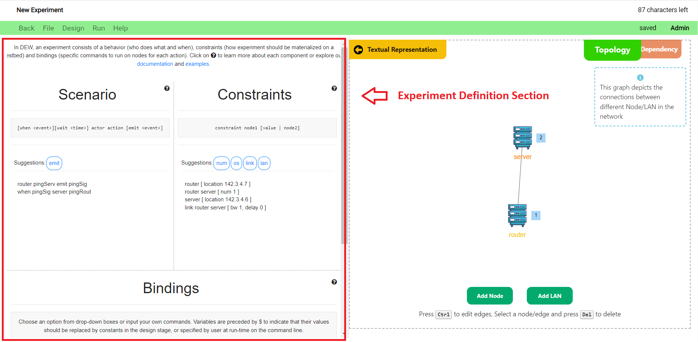
Navigating the Page
- The initial page that opens once you create/open an experiment depicts the network topology of the experiment.
- You can click on the
Graph Selectorto toggle between the topology network and the dependency graph views. - You can click on the
Experiment Definition Section Toggleto toggle the Experiment Definition Section view.
Tutorials
View video tutorials on using the experiment page below:
Experiment Name
- The name of the experiment is displayed on the top left corner of the page.
- To edit the name, click on the name and update the text. (just like Google docs)
- The name can be a maximum of 101 characters. The number of characters remaining is shown to the right of the name.
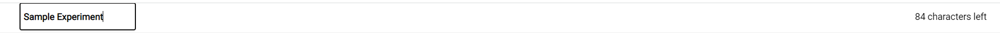
Menu Bar
- The menu bar is colored green when the experiment does not contain any unsaved changes. 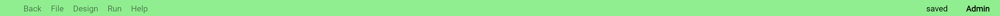
- It is colored grey if the experiment contains unsaved changes. The status is also shown next to the access level to the right. 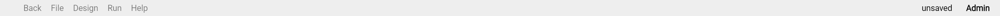
-
Your level of access with the experiment is displayed towards the extreme right.
The various buttons and their functions are as follows:Back button
- Click on the back button to go to the dashboard. Alternatively, you can use the back button in the browser.
File menu
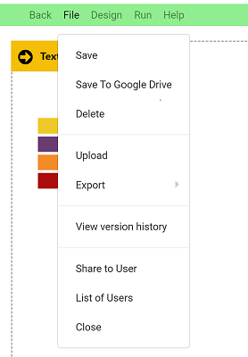
-
This menu contains a number of file related operations. They are:
Save
- Clicking on save will save the current experiment to the database.
Save to Google Drive
- This button allows you to save the experiment to Google Drive. The experiment is saved in the DEW format.
- The user will have a top level directory called “Distributed Experiment Workflows” in their Google Drive.
- Inside the top level directory, we have folders created for each experiment.
- Files relevant to the experiment will be contained in the respective experiment folders.
- For example, if we have an experiment named "test", the DEW file will be located at
MyDrive > Distributed Experiment Workflows > test > test.dew.
Delete
- Deletes the experiment in the DEW portal. This is a non-recoverable action. But, the experiment will still remain on your Google Drive, if you have saved it there.
Version history
- View the changes made previously to the experiment.
- To revert to a particular version, click on the revert button.
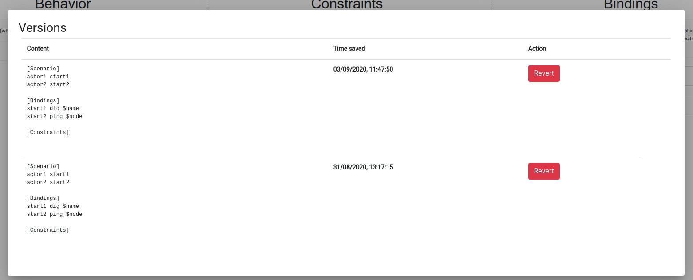
Share to User
- Share the experiment with another DEW user for access. To learn more about sharing and access levels, visit the Sharing and Collaboration page
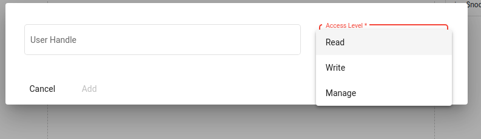
List of users
- View and manage the list of users who can access the experiment. To learn more about sharing and access levels, visit Sharing and Collaboration page.
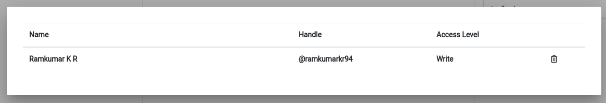
Close
- Close the experiment and go back to the dashboard.
- Clicking on save will save the current experiment to the database.
Note: If the user has not saved the file, the file menu would have a restricted set of options as shown below.
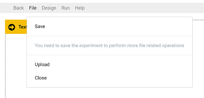
Save
- This menu option is used to save the experiment to the database. Other file operations cannot be performed until the user has saved the experiment.
Input
This menu option allows the user to upload an experiment saved locally in the DEW format or as a bash script. We hope to support more experiment formats in the near future.
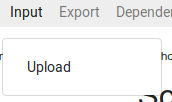
Upload
Upload DEW files to load the experiment. For example, the DEW file saved in Google Drive can be used for upload.
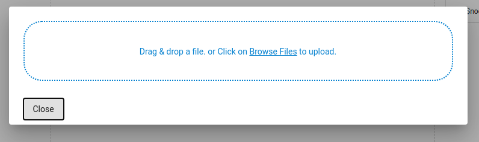
Export
This menu is used to export the experiment to different formats
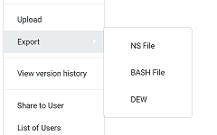
NS file
- Download the NS file for the current experiment
BASH file
- Download the Bash script or scripts for the experiment. Currently the scripts should be run on Deterlab, from the users machine. Running the script without arguments will display a help message to tell you which input parameters you need to specify.
DEW
- Download the DEW file of the current experiment.
- Click on the back button to go to the dashboard. Alternatively, you can use the back button in the browser.
Graph Views and Manipulation
As mentioned previously in the document, the Visual Representation Section comprises of the Network Topology Graph and the Dependency Graph. The steps to create and manipulate the graphs are shown below:
-
Network Topology Graph
The Network Topology Graph depicts the experiment nodes and the connections that exist between these nodes.
-
Graph Creation and Manipulation
- Switch to the
Network Topology Network Viewby clicking on the Topology Button in the Graph Selector bar. - You can add nodes to the network by clicking on the
Add Nodebutton on the bottom portion of the screen. Nodes are represented as server icons in the graph. - You can add a LAN to the network by clicking on the
Add LANbutton on the bottom portion of the screen. LANS are represented as black dots in the graph. - You can add links between the nodes by clicking and holding
Ctrl + Left Mouse Buttonbetween the 2 nodes that need to be linked. Links are represented as black lines in the graph. - The
Action Numbertowards the side of the node icon denotes the action sequence numbers of the actions associated with the actors (nodes). - The network topology components and their symbols are shown below. 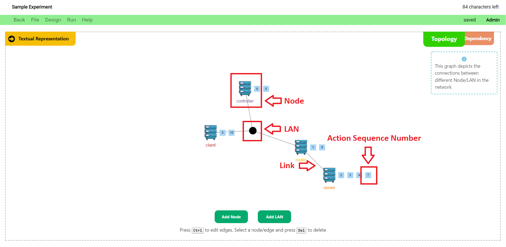
- You can define the parameters of a network node such as the Operating System, IP Address/Location, Number of Nodes, and Hardware Type by clicking on a node and modifying the fields in the popup that displays on the top-right portion of the screen.
- You can also define the parameters of a link/LAN such as the Bandwidth and Delay by clicking on the link/LAN and modifying the fields in the popup that displays on the top-right portion of the screen.
- The Topology Node/Link Parameter Definition popup is shown below.

- Any changes made to the network topology graph also reflects in the scenario and constraints in the Experiment Definition Section of the page.
- Switch to the
-
-
Dependency Graph
In order to understand the experiment better, we have a graph view which displays the experiment as a flowchart of actions. The nodes denote actions, with the color of the node denoting the actor that performs the given action. Edges denote a dependency, where one action results in an event and a following action waits for that event. You can create new edges (dependencies) between nodes, or delete existing edges (dependencies). As you modify the dependency graph, the modifications are propagated to the Experiment view. The Dependency Graph depicts the actions of the experiment, and the dependencies that exist between the actions.
-
Graph Creation and Manipulation
- Switch to the
Dependency Graph Viewby clicking on the Dependency Button in the Graph Selector bar. - You can add actions to the dependency graph by clicking on the
Add Actionbutton in the bottom portion of the screen. This will open up the Add Action Popup. - Note that you can access the same Add Action Popup when you click on the
Add Actionbutton in the Topology Node/Link Parameter Definition popup that shows up when you click on a node in the network topology graph. - Using the Add Action Popup, you can create an action by assigning an action name, trigger event, emit event, wait time, action binding, and event binding; and then clicking on the
Add Actionbutton. - You can also edit an action by clicking on the
Edit Actionbutton that shows up in the bottom portion of the screen when you click on the respective action. - The Add Action Popup is shown in the image below.
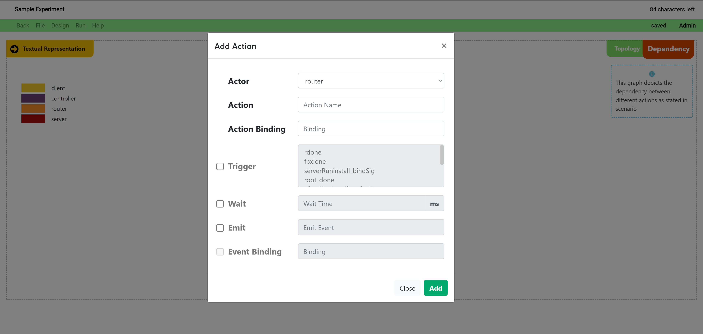 - The
Action Numbertowards the side of the action icon denotes the action sequence numbers of the actions associated with the actors (nodes in the graph legend). - Any changes made to the dependency graph also reflects in the scenario and bindings in the Experiment Definition Section of the page.
- The dependency graph components and their symbols are shown below.
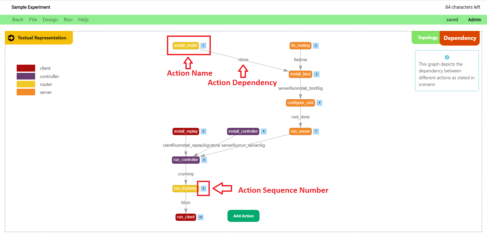
- Switch to the
-
Behavior, Constraints, and Bindings
- In DEW, an experiment consists of a scenario (who does what and when), constraints (how experiment should be materialized on a testbed) and bindings (specific commands to run on nodes for each action).
Behavior
- Behavior defines the actions to be executed by actors during the experiment. You can think of an actor as a node in an experiment, or as many nodes that perform the same set of actions. You can think of an action as one or more commands executed on a node in an experiment. An action can result in an event (we say that it emits an event) and a later action will occur only when that event is generated. For example you may want to install an Apache application on the “server” node, and then generate traffic to it from a “client” node when the installation is completed. Two actions that are not connected by emit-when rules occur independently and in parallel. Please explore our examples to get familiar with some common uses of DEW language.
- Behavior statements are in the form of
[when <event>][wait <time>] actor action [emit <event>]
- For example, if you want to express the following behavior "A pings B, after that B waits 5 sec and pings A" you would write:
A start_ping1 emit ping1_done
when ping1_done wait 5 B start_ping2
Conversely if you wanted A and B to ping each other in parallel you would write:
A start_ping1
B start_ping2
Names of actors will eventually correspond to names of nodes in your experiments. Names of actions are chosen by you. You will get to define what they mean in the bindings section.
- As you start typing there will be auto-suggestion displayed near the top of the text area.
- Press tab to use the first auto suggested word. It will append the word near the cursor in the textarea.
- There will also be suggestion displayed along with suggested text. This will help you to write the next word or phrase.
Constraints
- The constraints section helps define any constraints about the topology of the experiment, as it will be materialized on a testbed.
- The statements are in the form of
constraint_type actor1 [actor2|value]
- The allowed constraint types are
- os
- num
- link
- lan
- interfaces
- location
- nodetype
- For example:
os server ubuntu
num attacker 3
lan client attacker
link router server
- As you start typing there will be auto-suggestion displayed near the top of the text area.
- Press tab to use the first auto suggested word. It will append the word near the cursor in the textarea.
- There will also be suggestion displayed along with suggested text. This will help you to write the next word or phrase.
Bindings
- The bindings section defines the commands to be executed on testbed nodes for the given action or event in your experiment.
- Choose an option from drop-down boxes or input your own commands. Variables are preceded by
$to indicate that their values should be replaced by constants in the design stage, or specified by user at run-time on the command line. - For example:
install_iperf apt-get install iperf -y
run_tcpdump tcpdump -i expIP -w $file
install_flooder /scripts/common/install_flooder.sh
start_server iperf -s
- As you start typing behavior above this area will be populated with the terms which require definition for the experiment to execute.
We have provided some suggestions for action and event bindings. Please look at the binding suggestions page for more information.